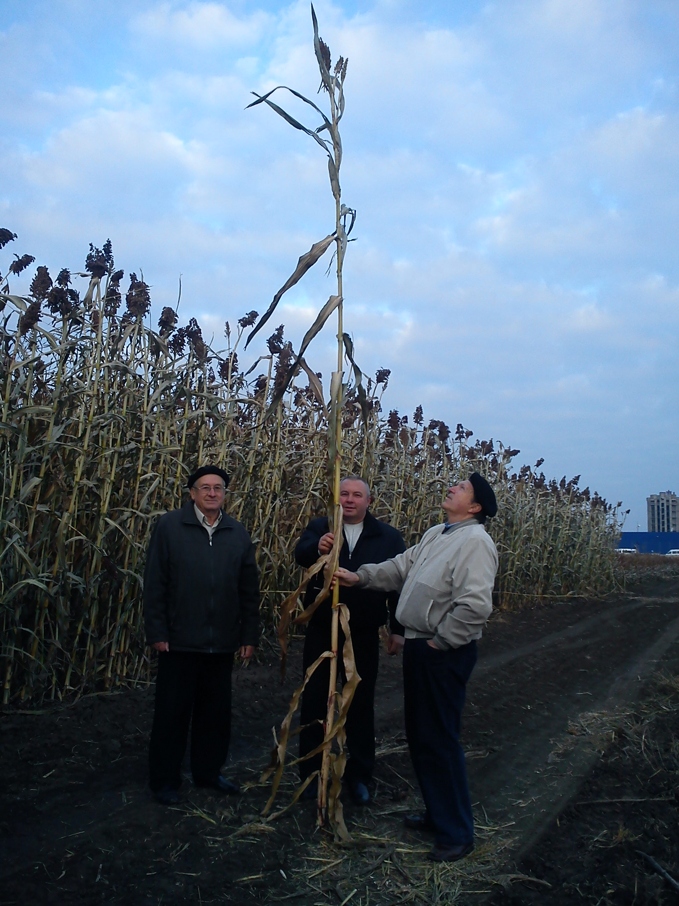
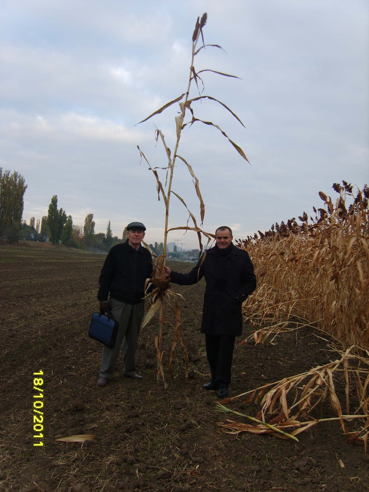
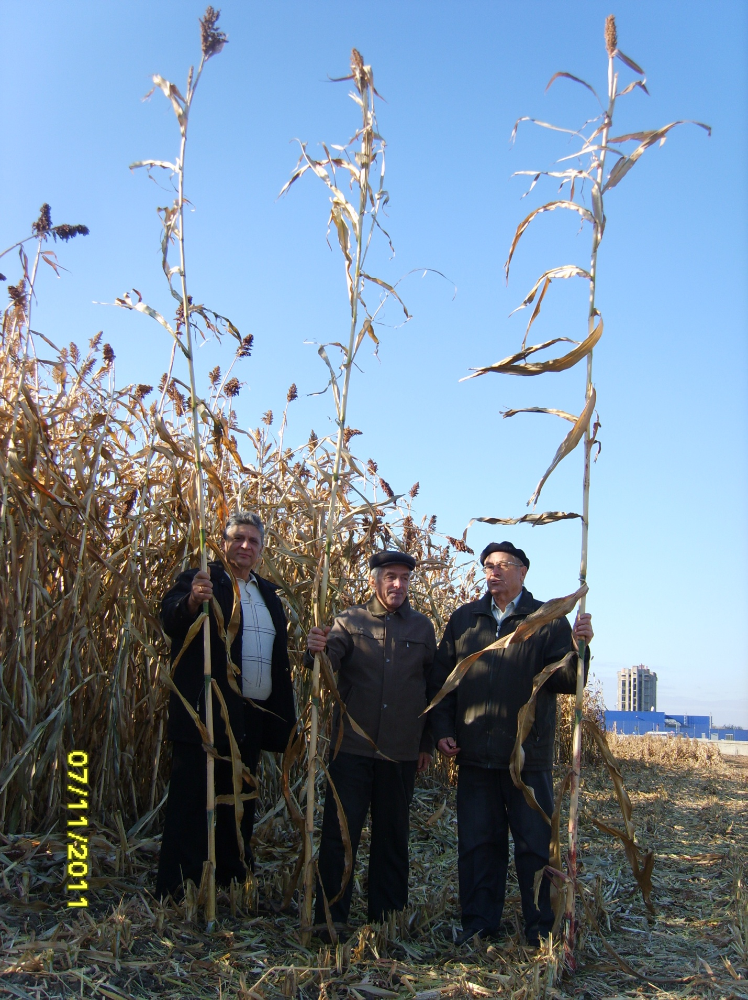

The National Sorghum Institute is Moldova's dedicated sorghum research institution — with hybrids registered in 6 countries, 2 active patents, and partnerships with leading agricultural research centres across Europe.
Institutul Național al Sorgului este instituția dedicată cercetării sorgului din Moldova — cu hibrizi omologați în 6 țări, 2 brevete active și parteneriate cu centre de cercetare agricolă de top din Europa.
1952
Year research began — 70+ years of continuous sorghum science in Moldova
Anul în care a început cercetarea — 70+ ani de știință continuă a sorgului în Moldova
11+
Registered hybrids across 6 countries
Hibrizi omologați în 6 țări
MD · UA · RU · BY · KZ · RO
250+
Inbred lines in the gene pool — one of Europe's richest sorghum germplasm collections
Linii consangvinizate în genefondul activ — una din cele mai bogate colecții din Europa
2025–27
Active R&D project: improving sorghum seed production & processing technologies in the context of climate change
Proiect activ C&D: perfecționarea tehnologiilor de producere și prelucrare a semințelor în contextul schimbărilor climatice



Scientific Partners
Parteneri Științifici
🇲🇩 Institute of Genetics, Physiology & Plant Protection — Chișinău
🇷🇺 N.I. Vavilov All-Russian Institute of Plant Genetic Resources — St. Petersburg
🇺🇦 Plant Breeding & Genetics Institute — Odessa
🇷🇴 Agricultural Research Institute — Fundulea, Romania
🇭🇺 Alfaseed Innovative Seed Company — Karcag, Hungary
Media Coverage
Acoperire Media
In the News
În Presă
Our research has been featured on national television and in scientific publications across Moldova and Romania.
Cercetările noastre au fost prezentate la televiziunea națională și în publicații științifice din Moldova și România.